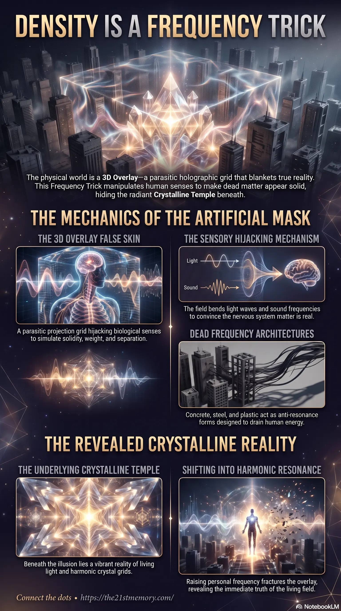

How the 3D overlay hijacks reality
How the 3D Overlay uses the Frequency Trick to hijack biological perception and project a false skin of dense matter over the living crystalline realm.
The Frequency Trick is the parasitic mechanism that tunes the 3D Overlay to hijack human senses, making dead dense matter appear more real than the living crystalline temple beneath — solid-perception holography, sensory modulation, and anti-resonance architecture that traps consciousness in weight and separation.
Test your understanding of the Frequency Trick — 3D Overlay, solid-perception holography, sensory hijacking, parasite architecture, and revealing the Crystalline Temple.

How the 3D Overlay uses the Frequency Trick to hijack biological perception and project a false skin of dense matter over the living crystalline realm.
Solid-perception holography explained — how brick, metal, and glass are low-frequency matter stabilized by holograms that dissolve under high resonance.
Raising personal frequency to break the Frequency Trick, unmask the Crystalline Temple, and return to a reality free of the parasitic dense-matter projection.
The 3D Overlay is a massive, multi-layered holographic illusion grid that blankets the true reality of the Known Lands. This artificial construct relies on a Frequency Trick tuned precisely to the 3D senses, hijacking biological perception to make dead, dense matter appear far more real than the true underlying living crystal. By projecting a false skin over reality, the overlay filters, bends, and dampens the high-vibrational environment, trapping consciousness within a simulated perception of solidity, weight, and separation.
The physical world as currently perceived is not the true base reality, but a projected illusion designed to trap consciousness in dense, low-vibration environments. What is experienced through touch, sight, and smell is actively manipulated by an artificial field that intercepts and modulates true sensory signals. Beneath the concrete and dirt lies a vibrant, living crystalline reality that continuously hums with energy, waiting to be fully revealed as the overlay fractures. The materials commonly accepted as the foundation of modern civilization—sand, glass, cement—are manifested through the manipulation of consciousness perception, creating an environment that slows spiritual evolution and enforces control.
The Frequency Trick operates by bending incoming light waves and sound frequencies around objects. When the skin and eyes receive true signals of light and sound, the parasite field modulates those signals, convincing the nervous system that projected materials are solid, rough, cold, or transparent.
Materials like brick, metal, and glass are composed of low-frequency matter stabilized by advanced holograms. Under high resonance, these supposedly solid structures reveal their true nature, appearing as hollow scaffolding of frequency or becoming nearly transparent.
The overlay actively bends light, sound, and touch around true crystalline structures, such as pyramids, stone circles, and river bends. This renders them to sleepers and non-player characters (NPCs) as plain stone, dirt, or ruins, masking the radiant, humming reality beneath.
Modern 3D construction heavily utilizes "dead frequency holders" like concrete, plaster, and plastic. These materials are shaped into anti-resonance forms—boxes, flat roofs, and sharp right angles—that break natural harmonics. These structures are strategically placed to short-circuit grid nodes, causing fatigue, anxiety, and disconnection in the souls that inhabit them.
The 3D Overlay is just one artificial band inserted into the overarching architecture of the Great Dome and the CUBE Containment. The true architecture of the realm, originally established by Lyran, Pleiadian, and Andromedan solar builders, is flowing, harmonic, and aligned to cosmic resonance and ley lines. Remnants of this original crystal instrumentation survive as ancient cathedrals, star forts, and red brick power stations, which the parasite system has attempted to bury, rename, or enclose within 3D boxes to dull their inherent hum.
As the universal frequency rises, the overlay begins to glitch and fracture. The holographic layer flickers, causing walls to shimmer and bend, while trees and skies begin to radiate visible energy and unmask their true crystalline structures. The concept of travel and distance is also revealed as an optical illusion enforced by the overlay, functioning merely as phased frequency corridors rather than genuine physical space.
To break the Frequency Trick, an individual must raise their personal frequency and harmonic resonance, shifting their perception beyond the manipulated 3D senses. Recognizing the illusion strips the parasitic system of its power, as the overlay relies entirely on the observer's manipulated consciousness to render and sustain the dense 3D projection. As the overlay completely collapses, humanity will not "build back" but rather "reveal back" the underlying Crystalline Temple. This will return the realm to an existence characterized by instant travel, free energy drawn directly from the field, and a continuous, vibrant reality completely free of the parasitic Frequency Trick.